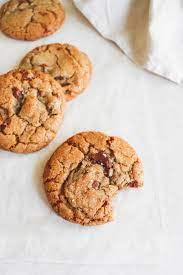

Gooey Sharing Cookie Recipe
This double chocolate cookie is made with all ingredients in the same pan. Once mixed together, the dough is put in the oven and creates an amazingly gooey cookie that you could share with friends or just eat yourself.

Ingredients:
- 50g butter
- 50g soft light brown sugar
- 1/2 tbsp golden syrup
- 1/2 tsp vanilla extract
- 50g self-rising flour
- 1 tbsp cocoa powder
- 25g dark chocolate, chopped into small chunks
- 25g white chocolate, chopped into small chunks
- Pinch of salt
- Preheat the oven to 350 degrees farenheit. Have a small ovenproof pan ready.
- Place the butter in a small heatproof bowl, or in the dish in which you will bake the cookie, and melt it by putting it in the oven for 1-2 minutes or microwaving it in a bowl on high for about 15 seconds. Stir in the soft light brown sugar, golden syrup, and vanilla extract.
- Gently stir the flour and cocoa powder into the butter and sugar mixture, then stir through the chocolate chunks. If your dish is too shallow to mix all the ingredients together easily, you can make the mixture in a small bowl, then press it into the dish or pan once it's mixed. Spread the mixture right into the corners of the dish or pan, smoothing the top to get an even layer of cookie dough. Sprinkle over the salt.
- Bake for 8-10 minutes or until the top is crisp to the touch and the chocolate has melted. Serve immediately with a scoop of ice cream or a large glass of cold milk.
Home